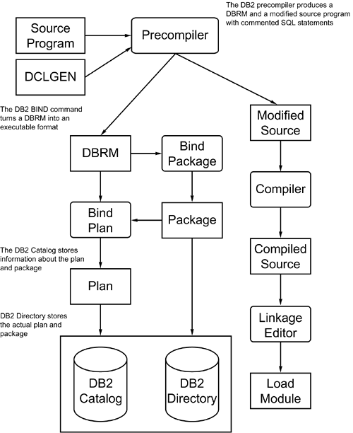

|
|
< Day Day Up > |
|
Program Preparation StepsYour first question might be "Just what is DB2 program preparation?" Quite simply, it is a series of code preprocessors that—when enacted in the proper sequence—create an executable load module and a DB2 application plan. The combination of the executable load module and the application plan is required before any DB2 program can be run, whether batch or online. CICS programs require an additional preprocessing step. This step is covered in Chapter 18, "The Doors to DB2." Figure 13.1 shows DB2 program preparation graphically. This section outlines each program preparation step and its function. Figure 13.1. DB2 program preparation.Issue the DCLGEN CommandIssue the DCLGEN command for a single table. On a table-by-table basis, DCLGEN produces a module that can be included in DB2 application programs. It reads the DB2 Catalog to determine the structure of the table and builds a COBOL copybook. The copybook contains a SQL DECLARE TABLE statement along with WORKING-STORAGE host variable definitions for each column in the table. DCLGEN can be used to create table declarations for PL/I, C, and C++ programs, too. DCLGEN is not a required step because the DECLARE TABLE statement and corresponding host variables could be hard-coded in the application program. Skipping this step, however, is not recommended. Run the DCLGEN command for every table that will be embedded in a COBOL program. Then every program that accesses that table should be required to INCLUDE the generated copybook as the only means of declaring that table for embedded use. For the DEPTTABL copybook, use the following INCLUDE statement:
EXEC SQL
INCLUDE DEPTTABL
END-EXEC.
DB2 must be running to invoke the DCLGEN command. See "Program Preparation Using DB2I" (in this chapter) and Chapter 36, "DB2 Commands," for more information on DCLGEN. A sample DCLGEN for the DSN8810.DEPT table follows:
**************************************************************
* DCLGEN TABLE(DSN8810.DEPT) *
* LIBRARY(DBAPCSM.DB2.CNTL(DCLDEPT)) *
* ACTION(REPLACE) *
* QUOTE *
* ... IS THE DCLGEN COMMAND THAT MADE THE *
* FOLLOWING STATEMENTS *
**************************************************************
EXEC SQL DECLARE DSN8810.DEPT TABLE
( DEPTNO CHAR(3) NOT NULL,
DEPTNAME VARCHAR(36) NOT NULL,
MGRNO CHAR(6),
ADMRDEPT CHAR(3) NOT NULL,
LOCATION CHAR(16)
) END-EXEC.
********************************************************
* COBOL DECLARATION FOR TABLE DSN8810.DEPT *
********************************************************
01 DCLDEPT.
10 DEPTNO PIC X(3).
10 DEPTNAME.
49 DEPTNAME-LEN PIC S9(4) USAGE COMP.
49 DEPTNAME-TEXT PIC X(36).
10 MGRNO PIC X(6).
10 ADMRDEPT PIC X(3).
10 LOCATION PIC X(16).
********************************************************
* THE NUMBER OF COLUMNS DESCRIBED BY THIS *
* DECLARATION IS 5 *
********************************************************
As the example shows, the DCLGEN command produces a DECLARE TABLE statement and a COBOL field layout for DB2 host variables that can be used with the table. NOTE The DCLGEN command produces qualified table names in the DECLARE TABLE statement. You might need to edit these before embedding the DCLGEN output in an application program. Alternatively, setting the current SQLID to the table owner will generate unqualified table names. Column PrefixingColumn prefixing, awkwardly enough, is specified using theCOLSUFFIX(YES) parameter and the NAMES parameter. When these two options are specified, DCLGEN produces field names by appending the column name to the literal prefix specified by the NAMES parameter. If the previous DCLGEN is created specifying COLSUFFIX(YES) and NAMES(DPT), for example, the results would be as follows:
**************************************************************
* DCLGEN TABLE(DEPT) *
* LIBRARY(DBAPCSM.DB2.CNTL(DCLDEPT)) *
* ACTION(REPLACE) *
* QUOTE *
* COLSUFFIX(YES) NAMES(DPT) *
* ... IS THE DCLGEN COMMAND THAT MADE THE *
* FOLLOWING STATEMENTS *
**************************************************************
EXEC SQL DECLARE DEPT TABLE
( DEPTNO CHAR(3) NOT NULL,
DEPTNAME VARCHAR(36) NOT NULL,
MGRNO CHAR(6),
ADMRDEPT CHAR(3) NOT NULL,
LOCATION CHAR(16)
) END-EXEC.
********************************************************
* COBOL DECLARATION FOR TABLE DEPT *
********************************************************
01 DCLDEPT.
10 DPT-DEPTNO PIC X(3).
10 DPT-DEPTNAME.
49 CPT-DEPTNAME-LEN PIC S9(4) USAGE COMP.
49 DPT-DEPTNAME-TEXT PIC X(36).
10 DPT-MGRNO PIC X(6).
10 DPT-ADMRDEPT PIC X(3).
10 DPT-LOCATION PIC X(16).
********************************************************
* THE NUMBER OF COLUMNS DESCRIBED BY THIS *
* DECLARATION IS 5 *
********************************************************
Note that each field defined in the COBOL declaration is prefixed with the value DPT, which is specified in the NAMES parameter. Null Indicator VariablesYou can use DCLGEN to create an array of null indicator variables by specifying INDVAR(YES). However, use this feature with caution as null indicator arrays are more difficult to use than individual null indicator variables (for more details, refer to Chapter 11, "Using DB2 in an Application Program"). Precompile the ProgramDB2 programs must be parsed and modified before normal compilation. The DB2 precompiler performs this task. When invoked, the precompiler performs the following functions:
The precompiler searches for SQL statements embedded in EXEC SQL and END-EXEC keywords. For this reason, every SQL statement, table declaration, or host variable in an INCLUDE copybook must be in an EXEC SQL block. DB2 does not need to be operational to precompile a DB2 program. Precompiler Services Can Reduce Compilation StepsIssue the BIND CommandThe BIND command is a type of compiler for SQL statements. In general, BIND reads SQL statements from DBRMs and produces a mechanism to access data as directed by the SQL statements being bound. You can use two types of BINDs: BIND PLAN and BIND PACKAGE. BIND PLAN accepts as input one or more DBRMs produced from previous DB2 program precompilations, one or more packages produced from previous BIND PACKAGE commands, or a combination of DBRMs and package lists. The output of the BIND PLAN command is an application plan containing executable logic representing optimized access paths to DB2 data. An application plan is executable only with a corresponding load module. Before you can run a DB2 program, regardless of environment, an application plan name must be specified. The BIND PACKAGE command accepts as input a DBRM and produces a single package containing optimized access path logic. You then can bind packages into an application plan using the BIND PLAN command. A package is not executable and cannot be specified when a DB2 program is being run. You must bind a package into a plan before using it. BIND performs many functions to create packages and plans that access the requested DB2 data, including the following:
The application packages and plans contain the access path specifications developed by the BIND command. The BIND command invokes the DB2 optimizer (discussed in depth in Chapter 21, "The Optimizer") to determine efficient access paths based on DB2 Catalog statistics (such as the availability of indexes, the organization of data, and the table size) and other pertinent information (such as number of processors, processor speed, and bufferpool specifications). The BIND command is performed in the Relational Data Services component of DB2. A package can be bound for only a single DBRM. A package, therefore, is nothing more than optimized SQL from a single program. Although packages are discrete entities in the DB2 Catalog and Directory, they cannot be executed until they are bound into a plan. Plans are composed of either one or more DBRMs or one or more packages. A plan can contain both DBRMs and packages. Further discussion of plans and packages is deferred until later in this chapter. NOTE User-defined functions and triggers are an exception to the rule of packages requiring a plan to execute. The CREATE FUNCTION and CREATE TRIGGER statements also BIND a package, which is used by DB2 whenever the UDF or trigger is executed. No plan need be bound by the user before the UDF or trigger can be used. For more information, refer to Chapter 4, "Using DB2 User-Defined Functions and Data Types," and Chapter 8, "Using DB2 Triggers for Integrity." The DB2 subsystem must be operational so that you can issue the BIND command. See "Program Preparation Using DB2I" and Chapter 36 for more information on the BIND command. Compile the ProgramThe modified COBOL source data set produced by the DB2 precompiler must then be compiled. Use the standard LE/370 COBOL compiler (or the compiler for whichever version of COBOL you are using). DB2 does not need to be operational for you to compile your program. If you are using a language other than COBOL, you will need to follow the same basic steps as you would for COBOL. Of course, you would use the compiler for your language of choice. For an overview of Java program preparation, consult Chapter 14. Link the ProgramThe compiled source then is link-edited to an executable load module. The appropriate DB2 host language interface module also must be included by the link edit step. This interface module is based on the environment (TSO, CICS, or IMS/TM) in which the program will execute. If you have a call attach product or use an environment other than TSO, CICS, or IMS/TM, consult your shop standards to determine the appropriate language interface routine to include with your link edited program. The output of the link edit step is an executable load module, which then can be run with a plan containing the program's DBRM or package. The link edit procedure does not require the services of DB2; therefore, the DB2 subsystem can be inactive when your program is being link edited. |
|
|
< Day Day Up > |
|